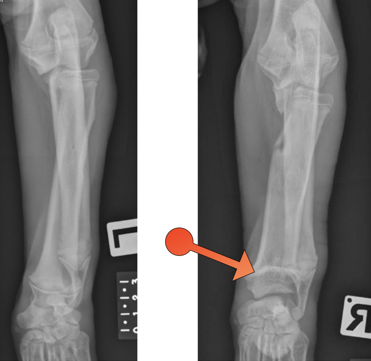
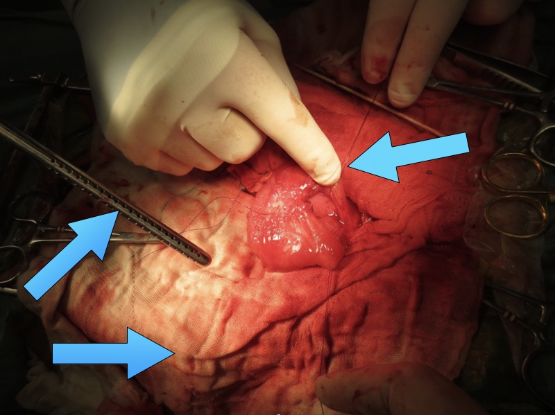
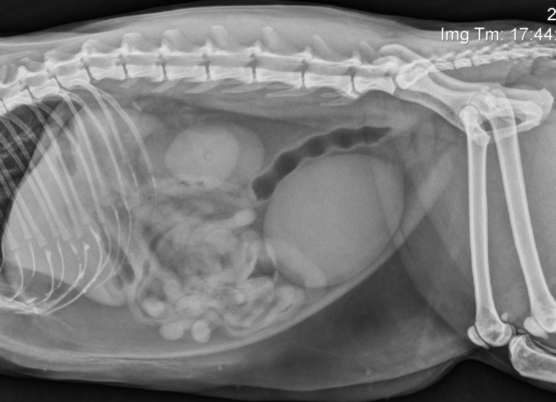
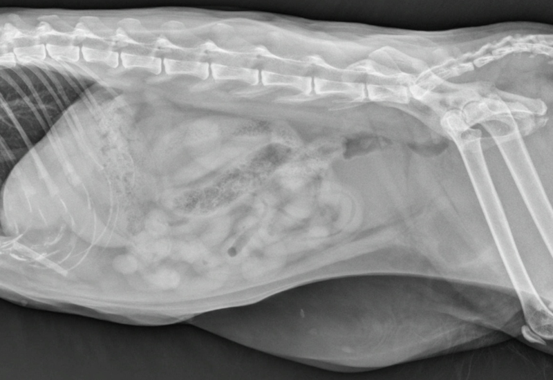
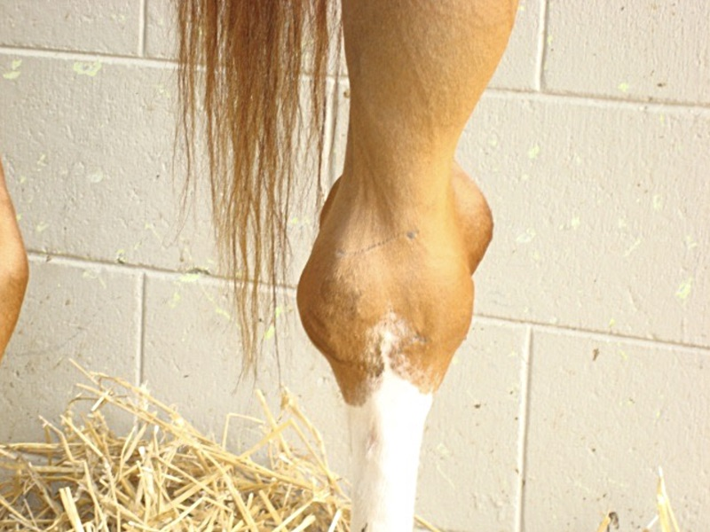
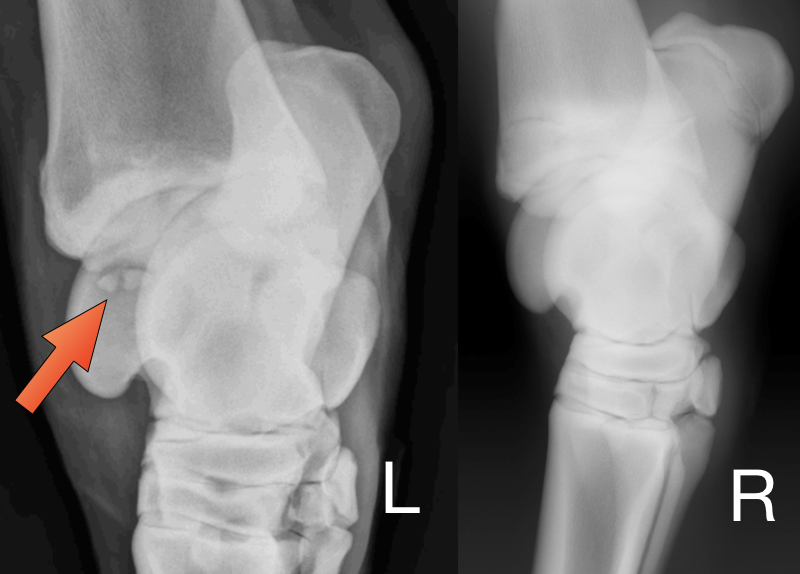

“Titan” a 4 month old large crossbred puppy is presented to your clinic with right forelimb lameness since an episode of trauma at 2 months old. Radiographs are performed and measurements made of antebrachial bones with the following results;
| radius length | ulna length | |
| left forelimb | 16cm | 19.6cm |
| right forelimb | 12.3cm | 19.4cm |
Above: lateral radiographic views of the left and right antebrachium
Above: craniocaudal views of the left and right antebrachium
1 What is the term given to this type of abnormality ? (1 mark)
angular limb deformity
2 How can it arise? (1 mark)
Partial closure of a physis / growth plate or complete early closure of a physis in a paired system of bones
3 Which bone is likely the cause of the problem in this case? RADIUS OR ULNA (1 mark)
radius
4 From the radiographs describe which specific area of the bone is causing the problems observed. (1 mark)
Distal radial physis
5 Is procurvatum or recurvatum of the radius present? (1 mark)
Recurvatum
6 As a result of this condition what other specific problem(s) may occur elbow and carpal joints? (3 marks)
Subluxation or incongrency, angulation and arthritis
7 How would you provide analgesia during the surgery? (2 marks)
Morphine, buprenorphine or some other opioid in premed, fentanyl or remifentanil during surgery if necessary, or brachial plexus block with bupivacaine or lignocaine.
8 How would you provide analgesia post operatively? (3 marks)
Morphine or other opioid plus NSAID such as meloxicam.
9 Would you give this dog antibiotics before surgery? (1 mark)
No - this is clean surgery.
“Heidi” a 6 year old female speyed dog is presented to your clinic for recurrent cystitis (bladder infection) and a cystolith (bladder stone) is diagnosed.
10 What imaging modality would you use to diagnose a cystolith quickly and safely? (1mark)
ultrasound
“Heidi” is subsequently taken to surgery to remove the stone.
11 You are setting up your anaesthetic machine and you open the oxygen cylinder. When full, this oxygen cylinder contained 1200L of oxygen. The pressure gauge currently reads 1500kPa (220psi). How much oxygen is left in the cylinder and how long therefore would you expect that cylinder to last if you were to use 1L of oxygen per minute in this patient? (2 marks)
120L 2hr - cylinder is 10% full.
12 In the image above, list THREE surgical methods or items that are being used to help prevent spillage of infected urine from the bladder into the abdomen. (3 Marks)
Packing off with laparotomy sponges, use of suction and stay sutures in the bladder.
13 If spillage of urine into the abdomen does occur, what should you do? (2 marks)
Suck it out, flush with warm saline and repeat.
14 What antibiotic(s) and by what route would you use empirically after urine contamination of the peritoneum? (3marks)
Broad spectrum drug required such as co-amoxiclav given iv. Bacteria have come from urine so the antibiotic must cover the common urinary pathogens.
15 Would bladder motility reducing drugs be useful to prevent recurrence of this condition? (1 mark)
No, they would probably make it worse.
“Missy” a 2 year old female neutered cat is presented to your clinic after it has been missing for 24 hours and having a possible episode of trauma. Pelvic fractures are present on radiographs and you suspect additional soft tissue injuries of the caudal abdomen. A normal lateral radiograph is presented along with a lateral abdominal radiograph of Missy;
Above: Normal lateral abdominal radiograph.
Above: Lateral abdominal radiograph from Missy.
16 What specific type of soft tissue injury is likely present over the caudal abdomen based on these radiographs? (2 marks)
Ventral Hernia
17 Is this a true or a false hernia? (1 mark)
False hernia (traumatic)
18 What organ may commonly become entrapped in this type of injury? (1 mark)
Bladder
19 Other than sutures what type of surgical implant may be needed in repair? (1 mark)
Mesh
Outline your anaesthetic protocol for this case:
20 premedication (1 mark)
Opioid and sedative, eg, morphine and acepromazine.
21 Induction (1 mark)
Propofol or alphaxalone or thiopentone or ketamine plus diazepam.
22 Maintenance (1 mark)
Isoflurane or sevoflurane or halothane or iv infusion of induction drug
23 Post-operative analgesia (1 mark)
Any suitable opioid plus NSAID.
All the above answers must be compatible to get full marks.
24 You accidentally have severe haemorrhage during surgery. Estimated blood loss is about 200 mL. How much isotonic crystalloid should you administer intravenously in order to replace 200 mL of blood loss? (2 marks)
200mL initially then 600 - 800mL total over the next half hour (plus maintenance of 5mL/kg/hr).
You are called out to examine a 2-year-old Warmblood gelding that was born and raised on the farm for swelling of the left tibiotarsal joint (see image below).
The owner reports that there was no trauma to the leg and that the swelling has been there for a few months, but that has increased as the horse started training. You examine the horse and detect a very mild lameness of the left hind limb (grade 1 out of 5). You decide to take radiographs of the left hock and also the right hock for comparison (see images below).
25 The right hock appears normal, but an abnormality is present in the left hock. Based on the signalment, history, clinical signs and radiographic findings what is the most likely diagnosis? (3 marks)
Osteochondrosis of the distal intermediate ridge of the tibia (D.I.R.T.), but I would accept also simply osteochondrosis or OC or OCD.
26 What would the best treatment option be for the abnormality present on the radiographs of the left hock in order to give the horse the best prognosis for future athletic performance? (2 marks)
Arthroscopic removal of the bony fragments, or simply surgical removal of the fragments.
27 Give four potential complications of anaesthesia in this horse. (4 marks)
Myositis, rough recovery leading to injury, severe hypotension, severe hypoxaemia, movement under anaesthesia, severe bradycardia
28 Does this case need antibiotics? If so, what drugs would you use? (2 marks)
No, but if you do use them, penicillin and gentamicin would cover the likely pathogens.